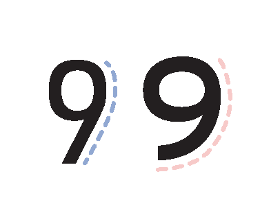

The origin of the DIN typeface traces back to early 20th century Germany when efforts to standardize and create unified standards across industries were prioritized. The original version of this sans-serif font, DIN 1451, was created by engineer Ludwig Goller in 1936. He sought to create a legible typeface that could be used for public signage. Goller based the typeface on Royal Prussian Railways from 1906, which had a standardized lettering system for marking freight cars and road signs. Goller, who served as the chairman of the DIN (Deutsches Institut für Normung) committee, or German Institute for Standardization, helped formalize the typeface. The name of the typeface was named after the institution. Due to DIN’s clarity and legibility, it was officially adopted as the standard typeface for German traffic signs and public signage.
Interstate
Interstate was designed by type designer Tobias Frere-Jones based in New York City. The variable font was released through Font Bureau in 1993 and is a reinterpretation of “Highway Gothic”, the official typeface of the American Federal Highway Administration. Highway Gothic was designed by engineer Theodore W. Forbes in 1949, intended to enhance the legibility of lettering on US interstate highway signs. Some letterforms of Highway Gothic were too quirky and did not follow traditional typography standards, prompting Frere-Jones to reinvent Highway Gothic and create Interstate, which was more refined and intentionally designed while still paying homage to the original’s unique charm.
Comparison
Similarities
Comparing URW DIN and Interstate at first glance, they are both vastly different. Interstate has a heavier weight and has a slightly taller x-height compared to URW DIN. However, both are actually similar in many ways. Both typefaces are sans-serif fonts and are highly legible, due to their simplicity. Due to their legibility, they are both commonly used for signage. Despite how Interstate in 30-pt type takes up more space and is a longer line length than URW DIN, they are both of similar height and have similar kerning.Similarities between the two would be their shared style of letterforms (ie. the ‘t’s are similar forms), apart from the ampersand. At a distance, Interstate (right) has greater legibility due to the thickness of the letterforms. However, URW DIN (left) is a lighter weight, which makes it more suitable for longer passages.
Differences
Comparing URW DIN and Interstate at first glance, they are both vastly different. Interstate has a heavier weight, and a slightly taller x-height compared to URW DIN. Certain letterforms are also drastically different. The ‘H’, ‘g’, and ‘l’ have the most noticeable differences, while ‘a’, ‘d’, ‘o’, and ‘e’ have subtle differences. The ‘H’ letterform in URW DIN reaches the cap line while in Interstate it does not. Interstate’s terminals in ‘d’, ‘l’, and ‘g’ are also sharper and pointer while DIN’s terminals are flatter. The bowls for ‘a’, ‘o’, ‘d’, and ‘g’ are also rounder for Interstate while DIN is boxier and narrower.The ‘O’ letterform for URW DIN (left) has a boxier bowl compared to Interstate (right) which is rounder. The x-height of DIN is also vertically stressed, making the counter narrower in comparison to Interstate. The lowercase ‘g’ in URW DIN (left) has a descender that touches the descender line and curves closer to the baseline compared to the ‘g’ in Interstate (right), which does not reach the descender line and curves only halfway. The aperture for DIN is also larger than Interstate. The tips of the terminals are different, with Interstate having a sharper edge compared to DIN.In the letter ‘i’, the tittle for URW DIN (left) is a square while in Interstate (right) it is a circle. The stem of DIN is shorter and thinner than Interstate.

The number ‘9’ is straighter and has less of a curve in URW DIN (left) than Interstate (right). The counter for Interstate has greater horizontal stress.The lowercase ‘t’ of URW DIN (left) has a horizontally straight ascender and 90° angle descender, while Interstate (right) has a pointer, slanted ascender and curvier descender.The lowercase ‘d’ for URW DIN (left) has a horizontally flat tip while Interstate (right) has a pointy tip. The leg in DIN’s ‘d’ is half the width of Interstate.
Examples and visual references
DIN
DIN 1451 and DIN Next were used for the logo for the Tokyo 2020 Olympics and Paralympic Games.DIN 16 and DIN 17 used for Too Cool for School, a fundraiser for young migrants.
Interstate
Interstate was used for the branding and logo of the well-known bank, Citibank.Interstate was used for the branding of Transformation Projects, a firm that promotes events and communication plans.